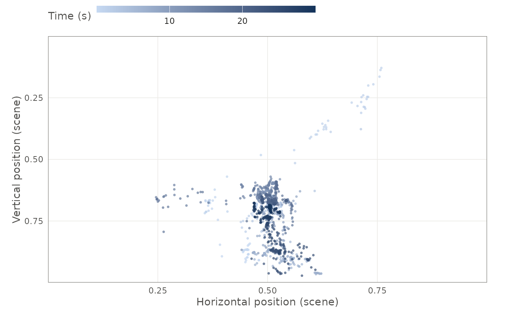
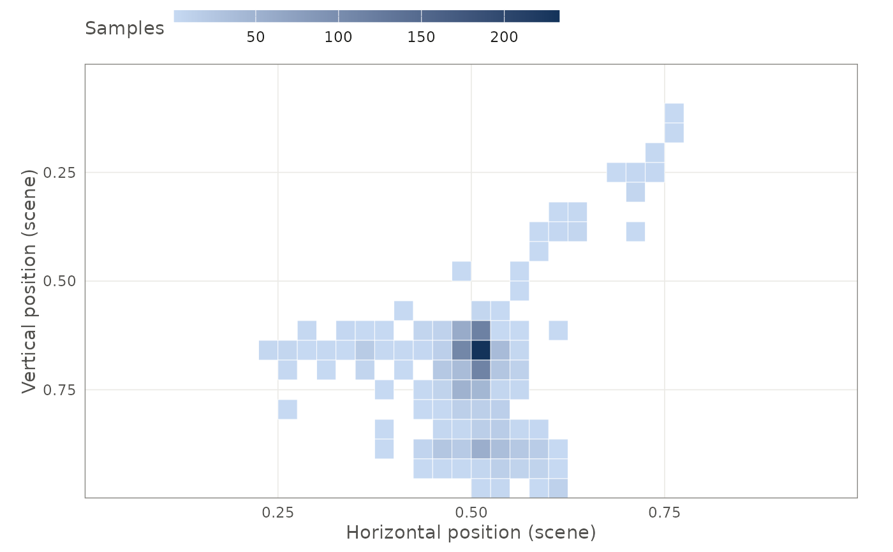

Plots the 2D gaze point in scene camera coordinates, with the top of the
video frame at the top of the plot. The frame shows the edges of the scene
video, and gaze points outside it are left out. With several recordings in
x, each gets its own panel.
Usage
plot_g3_gaze(
x,
type = c("points", "density"),
from = NULL,
to = NULL,
bins = 40
)Arguments
- x
Gaze data from
read_g3_gaze()org3_epochs(), or ag3_recordingfromread_g3().- type
"points"for individual samples, shaded from light (early) to dark (late), or"density"for a 2D histogram.- from, to
Time window in seconds. Defaults to all the data. For epochs, the window is in seconds from the onset.
- bins
Number of bins along the horizontal axis when
type = "density". The vertical axis gets 9/16 as many, so that the bins are square in the video.
Examples
rec <- read_g3(g3_example())
plot_g3_gaze(rec)

plot_g3_gaze(rec, type = "density")
